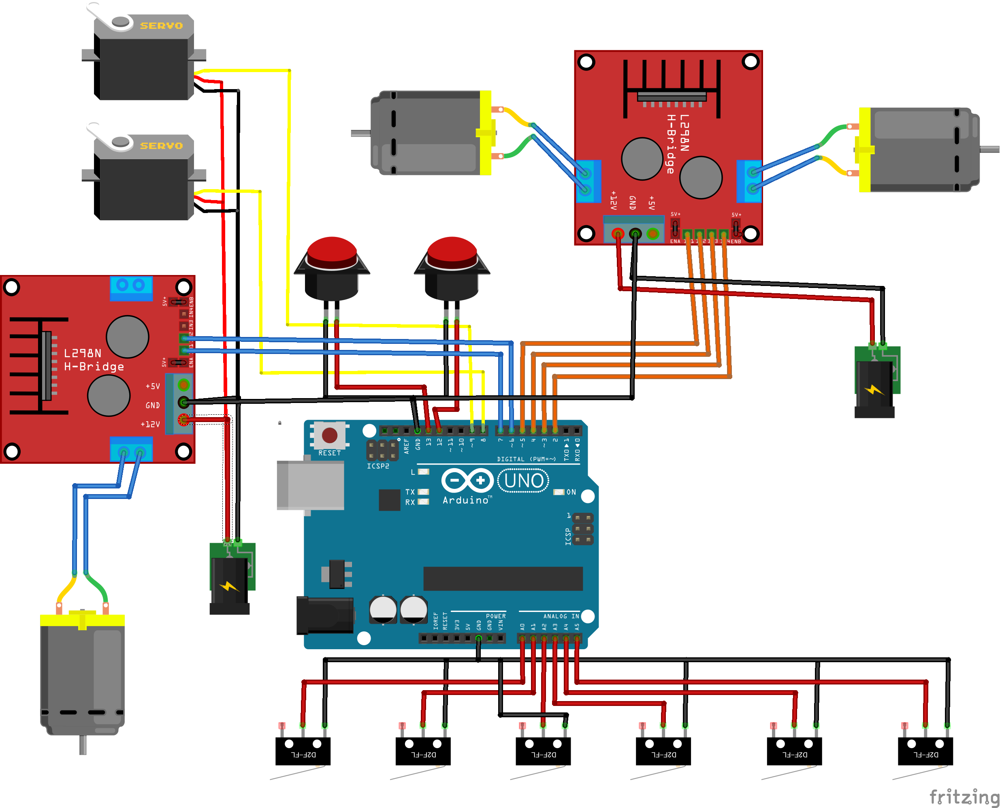
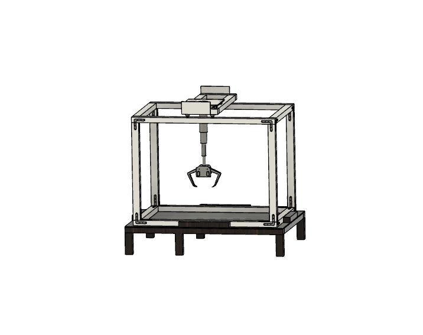
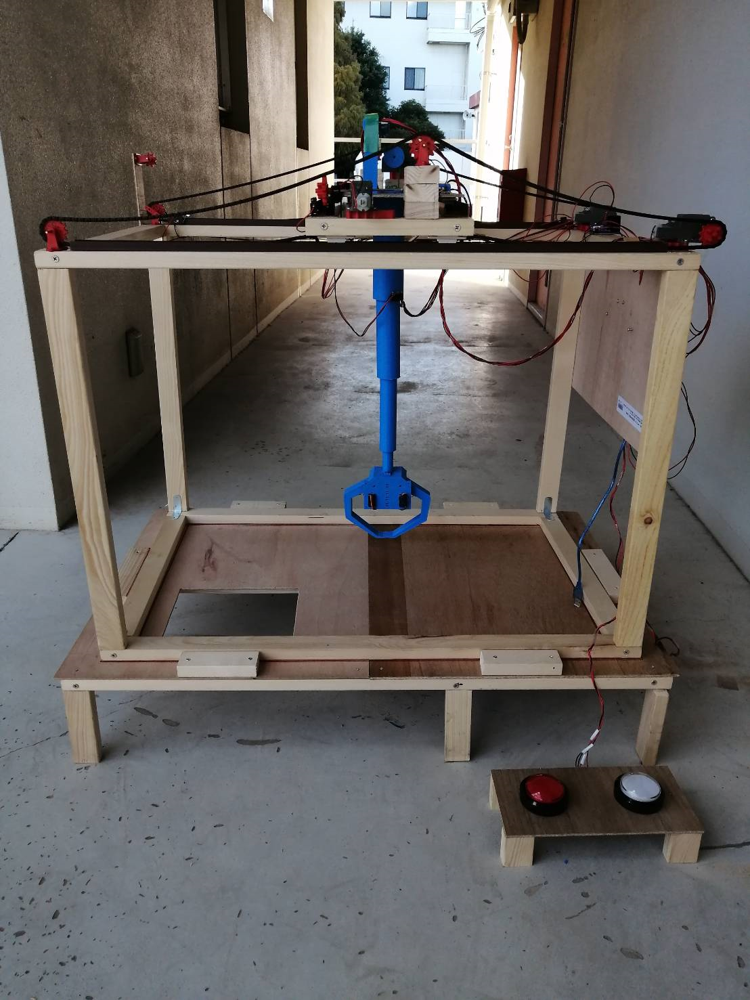
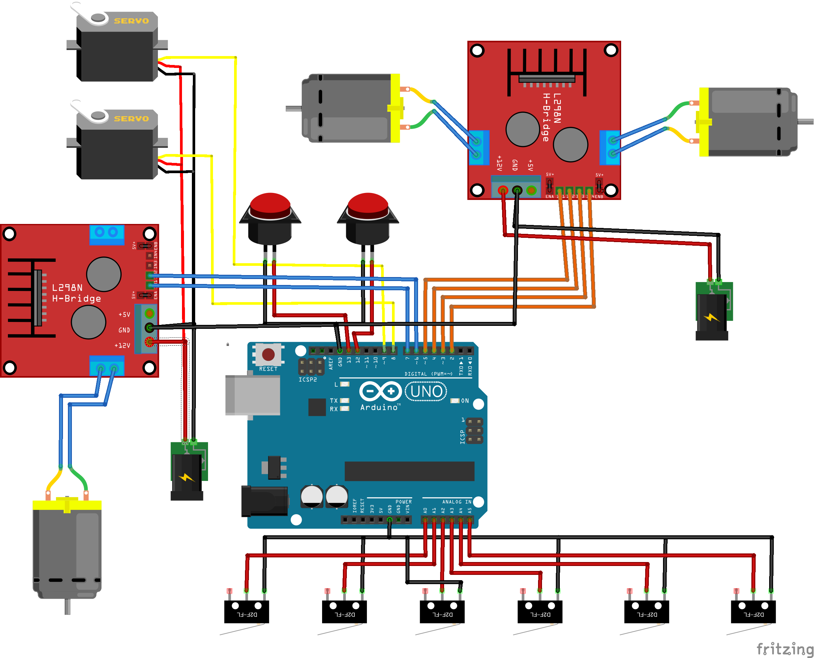
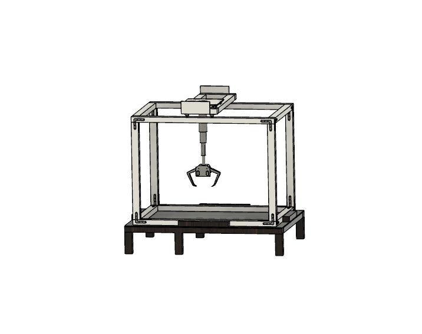
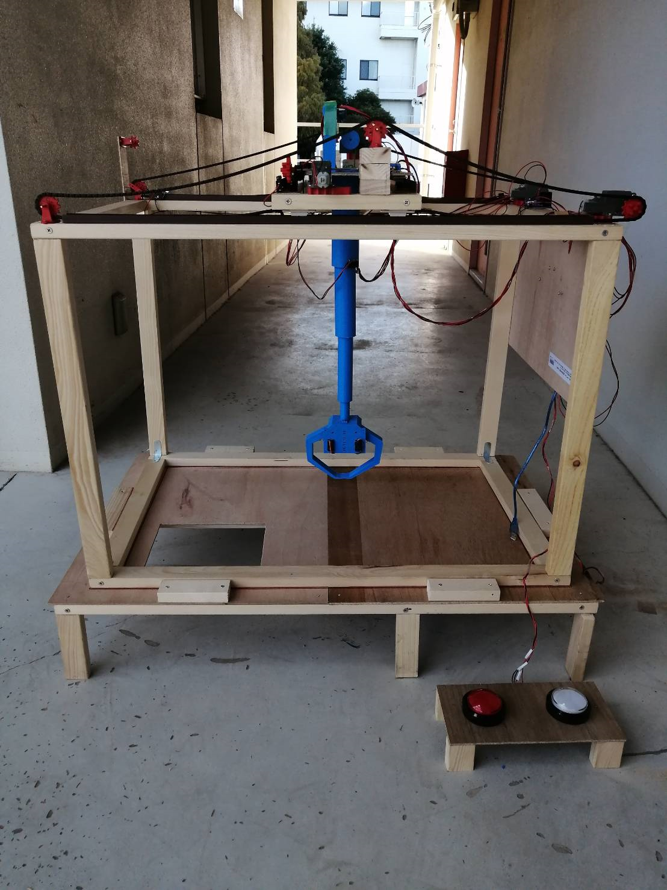

自作クレーンゲーム

2022年度の理大祭で展示。コロナ後2年ぶりに再開した学祭を盛り上げるため、有志3人と電子工作で培った技術を駆使してゲームセンターにあるクレーンゲーム機を再現。
プロジェクトの詳細
当時コロナの影響で人とのかかわりが少なったことで大学の雰囲気はどこか寂しげだった。そんなときに開催された2年ぶりの理大祭。理科大のモノづくりサークルとしてなんとしても理大祭の盛り上げに貢献したいと考え、コントローラやスマホで操作できるラジコンカーやロボットアームなどArduino を用いた遊べる電子工作をいくつか展示。なかでも一番の目玉はクレーンゲーム機。3DCAD を用いた機体設計から回路設計、ソフトウェア開発まで有志3人と力を合わせてゼロから製作。当日は子供たちが喜び、行列ができるほどの人気のブースとなった。自分たちのなんて事のない電子工作の技術でも”喜んでもらいたい”という思いのもと、作品の形を変えることで他者を喜ばせることができることを実感した。
使用した技術：Arduino, 3DCAD, 基板設計
ギャラリー
 




